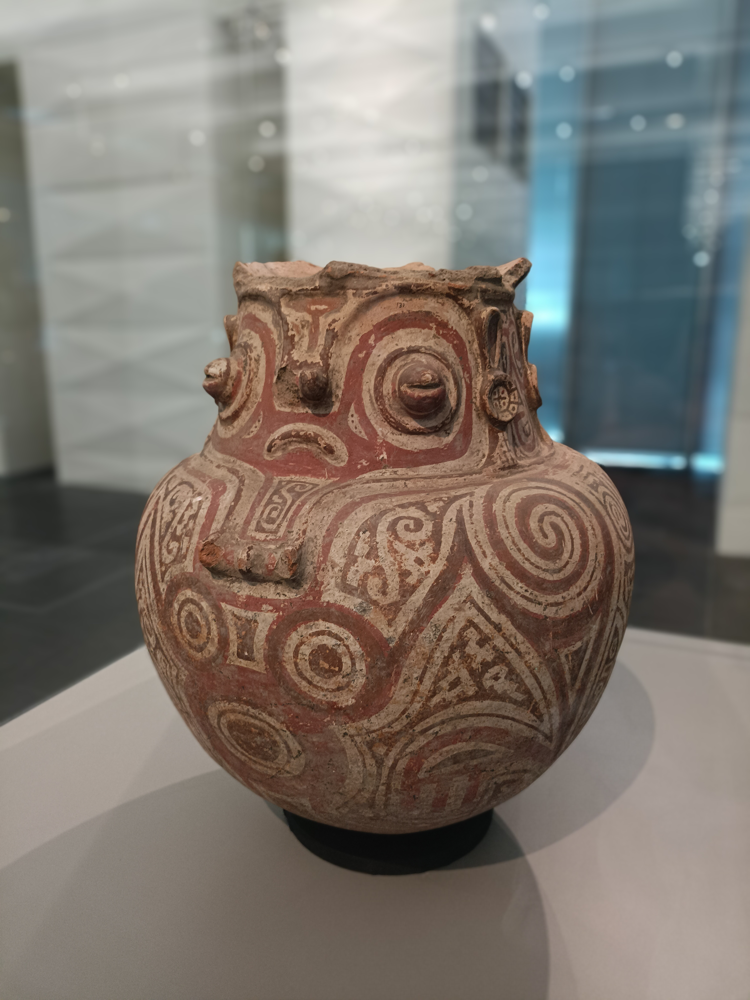
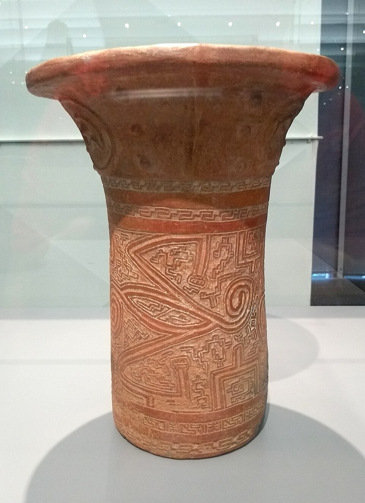
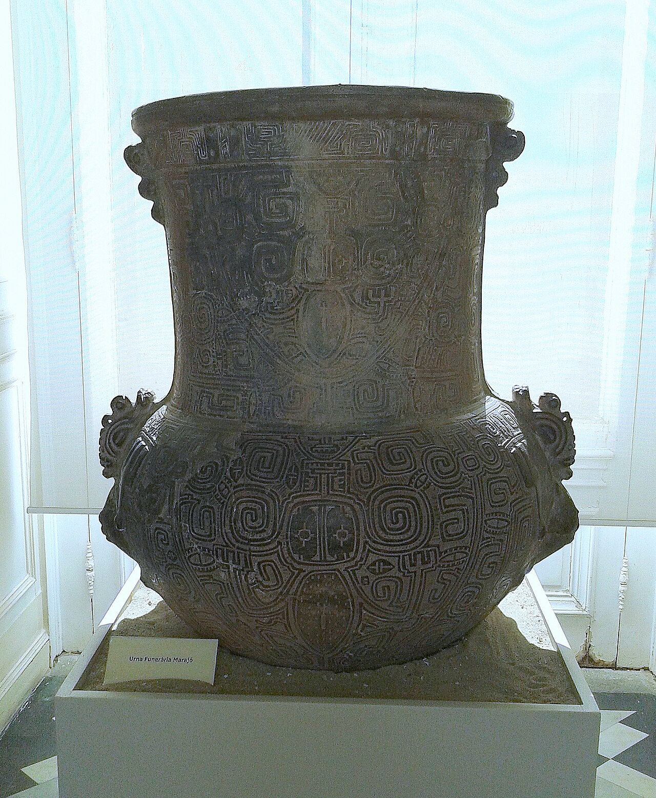

Tópico 9 de 9
Roteiro de análise de um objeto ou vestígio
Sete perguntas que transformam um objeto em fonte histórica — aplicadas, aqui, a uma urna funerária marajoara.
9.1 O objeto de estudo
Antes do roteiro, é preciso ter um objeto diante dos olhos. Trabalharemos com a urna funerária marajoara — uma peça que responde bem às sete perguntas e que reúne, em um único vestígio, quase tudo o que foi visto nos tópicos anteriores.



Imagens de acervos museológicos (Museu Paraense Emílio Goeldi, Museu Nacional/UFRJ e coleções congêneres). Ao usar as fotografias, indique sempre o acervo e o autor da imagem.
Urna funerária marajoara
O que é: vasilha cerâmica de grande porte — exemplares conhecidos ultrapassam 80 cm de altura — usada para guardar ossos humanos.
Onde: ilha de Marajó, foz do rio Amazonas, estado do Pará. Encontradas sobretudo em tesos, montículos artificiais de terra erguidos acima do nível das cheias.
Quando: fase Marajoara, situada aproximadamente entre os séculos V e XIV d.C. As balizas variam conforme o pesquisador e o sítio datado.
Por que ela serve ao roteiro: é objeto arqueológico, funerário, decorado, de técnica sofisticada, com interpretação disputada e com uma história de coleta e exposição carregada de conflitos. Cada passo do roteiro encontra nela material de sobra.
9.2 O roteiro em sete passos
Este é o procedimento central da habilidade EM13CHS104. Cada passo traz a pergunta geral, a sua aplicação à urna marajoara e links de pesquisa para você conferir, ampliar ou contestar o que está escrito aqui.
Descrever antes de interpretar
O que é, exatamente? Forma, tamanho, material, estado de conservação, marcas de uso, decoração. Descreva o que você vê, sem ainda atribuir função ou significado.
Situar no tempo e no espaço
Onde foi encontrado ou produzido? De quando é? Que sociedade o produziu? Se a datação é incerta ou disputada, registre a controvérsia em vez de escolher um número.
Reconstituir a técnica
Que matérias-primas foram usadas e de onde vieram? Que conhecimento foi necessário para produzir o objeto? Quem, dentro do grupo, dominava esse saber e como ele era transmitido?
Identificar o uso
Era objeto cotidiano, ritual, funerário ou de prestígio? De uso individual ou coletivo? O contexto em que foi encontrado — uma sepultura, uma cozinha, um templo — é decisivo para responder.
Ler os valores e as crenças
Que visão de mundo o objeto expressa? O que ele revela sobre hierarquias sociais, sobre papéis de gênero, sobre a relação do grupo com a natureza, com os mortos e com o sagrado?
Confrontar com outras fontes
O que os textos, os mapas, a tradição oral e outros objetos confirmam ou contradizem? Uma interpretação isolada é hipótese; sustentada por várias fontes, torna-se argumento.
Perguntar quem conta essa história
Quem escavou, colecionou ou expõe esse objeto? Ele permanece no território de origem ou foi levado para outro lugar? Quem hoje se reconhece como herdeiro desse bem e participa das decisões sobre ele?
9.3 Síntese do procedimento
O quadro abaixo condensa o percurso: de cada pergunta nasce um tipo diferente de conhecimento sobre a sociedade que produziu o objeto.
| Passo | Pergunta-chave | O que a urna marajoara revela |
|---|---|---|
| 1. Descrever | O que é, exatamente? | Cerâmica de grande porte, forma antropomorfa, pintura e incisões. |
| 2. Situar | Onde e quando? | Marajó (PA), fase Marajoara, séculos V a XIV — com cronologia debatida. |
| 3. Técnica | Como foi feito e por quem? | Argila com cauixi ou caraipé, engobo, pintura e queima controlada: saber especializado e transmitido. |
| 4. Uso | Para que servia? | Sepultamento secundário em tesos — conclusão sustentada pelo contexto de deposição. |
| 5. Valores | Que visão de mundo expressa? | Relação elaborada com os mortos; iconografia que alimenta hipóteses sobre gênero e hierarquia. |
| 6. Confronto | Outras fontes confirmam? | Terras pretas, tesos, crônicas do século XVI e tradição oral apontam para ocupação densa. |
| 7. Quem conta | Quem guarda e narra? | Museus e coleções, muitas vezes distantes de Marajó; herdeiros nem sempre ouvidos. |
Aplique o roteiro por conta própria
Escolha um objeto do seu cotidiano ou do seu bairro — uma peça de artesanato, um monumento de Aparecida de Goiânia, uma fotografia de família, um instrumento de trabalho — e responda às sete perguntas por escrito. Se travar em algum passo, o próprio travamento é informação: significa que falta contexto, e é ele que você precisa procurar.
Ver exemplos de análise📝 Atividade de fixação
Reforce o conteúdo estudado com os textos de apoio e as questões abaixo.
📄 Atividade 9 — Roteiro de Análise de um Objeto ou Vestígio
Leituras de apoio, questões dissertativas e objetivas.